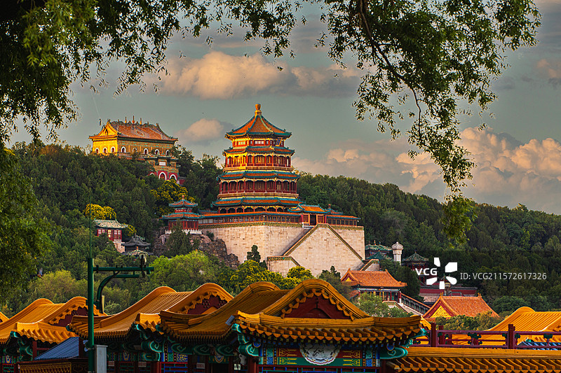
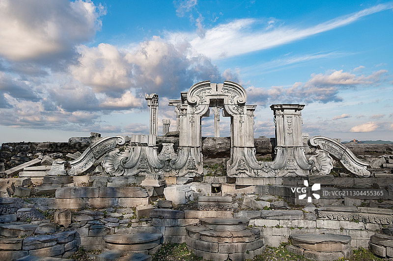
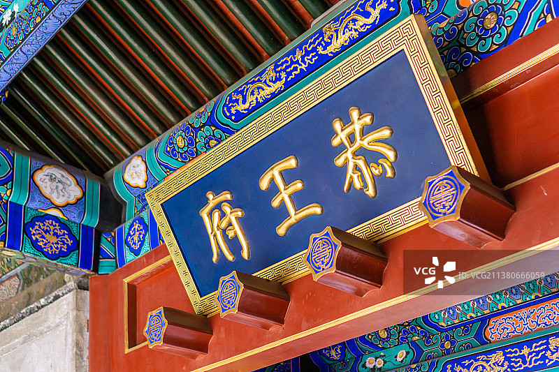
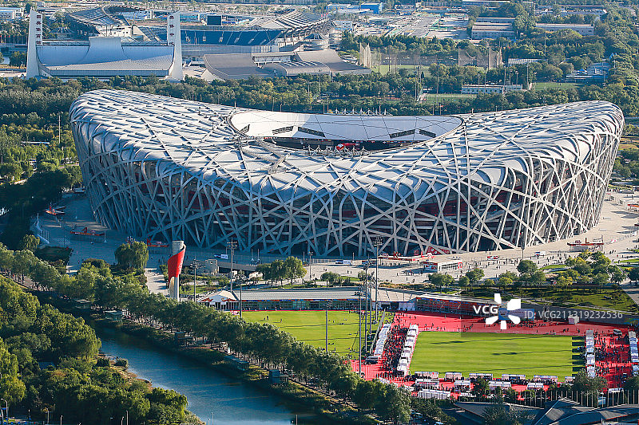
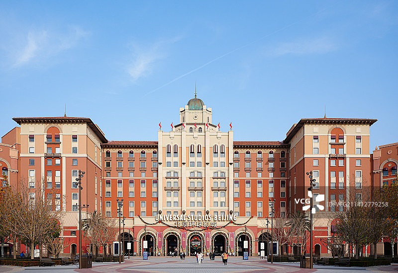
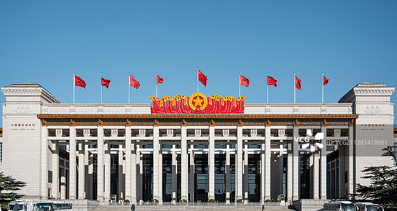

故宫博物院，位于北京中轴线的中心，旧称紫禁城，是中国明清两代的皇家宫殿。它始建于明永乐四年（1406年），历经十四年建成，是世界上现存规模最大、保存最为完整的木质结构古建筑群之一。
故宫占地72万平方米，拥有殿宇宫室九千余间，收藏有大量珍贵文物，涵盖青铜器、陶瓷、书画、玉器等门类，系统展现了中华五千年文明的精粹。它不仅是中国古代宫廷建筑的杰出代表，更是一座承载着历史与艺术的巨大宝库，被誉为世界文化遗产，吸引着全球游客前来探寻中华文化的博大精深
八达岭长城，位于北京延庆区，是明长城中保存最完好、最具代表性的一段。它始建于明代，地势险要，自古便是“拱卫陵京”的军事要冲，享有“天下九塞之一”的美誉。这段长城城墙高大坚固，平均高度约7.8米，沿着山脊蜿蜒起伏，敌楼密布，气势磅礴。其中北段（北八楼为制高点）与南段是主要游览区域，“好汉坡”更是吸引无数游客挑战自我。八达岭长城以其宏伟的景观、深厚的历史底蕴和完善的设施，成为中国的象征之一，1987年被列入《世界遗产名录》，是感受中华文明伟大与坚韧的必到之地。
一、 行前核心准备
- 门票预约： 务必通过 “八达岭长城”官方微信公众号或在线票务平台提前预约购票，实行实名制和限流管理。旺季（4月-10月）票价：40元/人；淡季（11月-3月）票价：35元/人。
- 交通选择（三种主要方式）：
高铁（最快、推荐）：在北京北站或清河站乘坐京张高铁，至“八达岭长城站”下车，车程约20-30分钟，出站即到景区。
市郊铁路S2线（“开往春天的列车”）：在黄土店站乘车，至“八达岭站”下车。价格亲民，但时间受列车时刻表限制。
公交专线：在德胜门箭楼后方乘坐877路公交车，一站直达八达岭前山停车场，车程约70分钟（不堵车情况下），性价比高。
- 必备物品：身份证原件、防滑舒适的登山鞋（至关重要！）、防晒用品、饮用水、少量补充体力的食物。
二、 游览路线选择
- 北线游览（最经典）：从关城（入口）往北，可抵达最高点北八楼（“好汉坡”所在），此段路程相对陡峭，但景点集中，视野最为壮阔。游客也最多。到达北八楼后，可选择原路返回，或继续前往北十一楼附近下山。
- 南线游览（相对平缓）：从关城往南，可抵达南四楼，此段路程较短，坡度更缓和，游客相对较少，适合体力稍弱或希望避开部分人流的游客。
- 登城方式：徒步：最普遍的方式，能充分体验长城魅力。
- 索道/地缆：北线有索道（至北七楼），南线有地缆（至南四楼）。可节省大量体力，适合老人、小孩或时间紧张的游客。（单程100元，往返140元）
网友评价:
“不愧是国宝级景点！爬上‘好汉坡’的那一刻，看着巨龙般的长城在群山之巅蜿蜒，内心真的被古人的智慧与毅力深深震撼。虽然台阶陡峭非常累，但站在城楼上的成就感和自豪感，让一切汗水都值得了。此生无悔来长城！”
“景色确实壮丽，但一定要错开节假日！我们工作日去的人都非常多。强烈建议穿最舒服的登山鞋，有些坡道接近70度，非常考验体力。另外，提前预约门票、早点出门是关键，否则排队坐接驳车和缆车会花费大量时间。做好攻略，体验感会好很多。”

颐和园，前身为清漪园，坐落于北京西郊，是中国现存最完整、规模最大的皇家园林，被誉为“皇家园林博物馆”。
它以昆明湖和万寿山为基址，以杭州西湖为蓝本，汲取江南园林的设计精髓而建。园内亭台楼阁错落有致，三千余间古建筑点缀其间。核心景点包括佛香阁、长廊、石舫、苏州街和十七孔桥等。长廊以其丰富的彩绘著称，十七孔桥则在夕阳下光影璀璨，景色绝伦。
颐和园集皇家气派与山水灵秀于一体，既是中国古典园林艺术的巅峰之作，也承载着深厚的皇家文化与历史记忆。
一、 行前核心准备
- 门票预约：建议通过 “颐和园”官方微信公众号或在线票务平台提前预约购票。园区实行实名制和限流管理。颐和园门票分为大门票和联票（含园中园），可根据需求选择。园中园包括佛香阁、德和园、文昌院、苏州街。
- 交通选择：地铁（最推荐）：北宫门入园：乘坐地铁4号线至“北宫门”站，D口出，步行约5分钟。这是游览“宫廷区”和万寿山后山的捷径。
- 东宫门入园：乘坐地铁4号线至“西苑”站，C2口出，沿同庆街步行约10分钟。这是传统入口，靠近仁寿殿。
- 西宫门/南如意门入园：相对小众，游客较少。
- 公交：多条公交线路可达“颐和园北宫门站”、“颐和园东门站”等。
- 必备物品：身份证原件、舒适的运动鞋（园区面积巨大）、防晒用品、饮用水。
二、 游览路线推荐
- 经典全景路线（半日/一日，约4-5小时）：
路线：从东宫门入园 → 仁寿殿 → 德和园 → 玉澜堂 → 宜芸馆 → 乐寿堂 → 漫步长廊 → 登上佛香阁（俯瞰全景） → 返回长廊至石舫 → 乘船至南湖岛（观十七孔桥） → 从新建宫门或东宫门出。
特点：覆盖了宫廷区、前山核心建筑和昆明湖主要景观，是效率最高的路线。
-
轻松休闲路线（半日，约2-3小时）：
路线：从新建宫门入园 → 观看十七孔桥与铜牛 → 沿东堤向北漫步 → 进入长廊休息 → 游览乐寿堂、玉澜堂等 → 从东宫门出。
特点：以昆明湖沿岸风光和核心建筑为主，避免了攀登万寿山，较为轻松。
-
小众清静路线（半日/一日）：
路线：从北宫门入园 → 游览苏州街 → 攀登万寿山后山 → 沿后溪河（苏州街后端）步行 → 经由长廊至前山 → 根据体力选择乘船或步行环湖。
特点：避开前山主要人流，体验后山的幽静与野趣。
三、 贴心提示
- 善用游船：昆明湖面积广阔，乘船（有多个码头）不仅能节省体力，还能从水上欣赏颐和园别样的美。航线多样，可按需选择。
- 园中园时间：注意园中园（如佛香阁、德和园等）的开放和关闭时间，通常比大院关门早。
- 园中园时间：注意园中园（如佛香阁、德和园等）的开放和关闭时间，通常比大院关门早。
- 关注体力：颐和园面积是故宫的近4倍，请合理规划路线，量力而行。西堤景色优美但路程较长。
- 摄影建议：拍摄佛香阁与昆明湖全景的最佳机位在湖对岸的南湖岛及东堤一带，傍晚时分的十七孔桥“金光穿洞”更是著名景观（冬季最佳）。

圆明园坐落于北京西郊，始建于清康熙年间，历经150余年营建，曾是一座举世闻名的皇家园林。它由圆明、长春、绮春三园组成，集中国古典园林艺术之大成，既有宫廷建筑的雍容华贵，又融合了江南水乡的婉约清丽，更创新性地引入西洋景观如大水法，被誉为"万园之园"。
园内曾珍藏无数奇珍异宝、典籍和艺术品，是清朝的皇家文化宝库。可惜在1860年遭英法联军劫掠并焚毁，后又历经劫难，如今仅存断壁残垣。这片遗址不仅是中国古典园林艺术的巅峰见证，更是中华民族百年沧桑的历史纪念碑，以其独特的残缺之美警示后人。
一、 行前核心准备
- 门票预约：建议通过 "圆明园遗址公园"官方微信公众号提前预约购票。门票分为大门票、西洋楼遗址区门票（必购）、沙盘全景模型展门票。推荐购买联票，以覆盖核心景点。
- 交通选择：地铁（最推荐）：乘坐地铁4号线至"圆明园站"B口出，即可到达南门（绮春园宫门），这是最常用的入口。
- 公交：多条线路可达"圆明园东门站"、"圆明园南门站"。
- 必备物品：身份证原件、舒适的运动鞋（园区面积巨大，相当于3个故宫）、防晒用品、饮用水。
二、 游览路线与区域详解
- 高效精华路线（约3-4小时）：
路线：从南门进入 → 游览绮春园（欣赏园林水景） → 经涵秋馆等地步行至长春园 → 核心参观西洋楼遗址区（包括大水法、观水法、海晏堂等） → 出口可选择从东门离开，或原路返回从南门离开。
特点：此路线能最有效地参观到最具标志性的遗址景观和经典园林风光。
-
乘船休闲路线：
在绮春园鉴碧亭北侧的码头，可以乘坐交通船，直达西洋楼遗址区附近。既能节省体力，又能从水路体验皇家园林的意境，非常适合老人、小孩或体力不佳者。
三、 贴心提示
- 心态准备：圆明园的核心价值在于其历史与教育意义，请带着一颗凭吊与思考的心前来，这里的震撼不同于故宫、颐和园的辉煌完整。
- 必看景点：西洋楼遗址区是圆明园的标志，包含大水法、海晏堂十二生肖兽首展览等，是绝大多数游客的必到之处。
- 善用交通：园区面积广阔，请合理规划体力。除乘船外，园区内也提供观光车服务，连接三园主要景点。
- 结合季节：春季有踏青节，夏季荷花盛开（水域面积广阔），秋季有银杏大道，冬季雪景苍凉，各有特色。
- 周边联动：圆明园与北京大学、清华大学、颐和园相距不远，可根据时间和兴趣安排串联游览。
网友评价：
"来这里心情很沉重，但非常值得。穿行在西洋楼遗址的残垣断壁间，那种视觉和心灵的冲击力是看照片无法比拟的。每一块石头都在诉说着曾经的辉煌与伤痛，这不仅是旅游，更是一堂生动的历史课。带孩子来很有教育意义，让他懂得'勿忘国耻'的真正含义。"
"没想到圆明园这么大，更像一个宁静的大公园。福海区域开阔水面很美，租条小船在湖上漂荡非常惬意。建议买联票去看一看标志性的西洋楼遗址，然后就在长春园、绮春园里慢慢逛，秋天这里的银杏大道格外漂亮。记得穿舒服的鞋子，全程走下来还是很需要体力的。"

恭王府坐落于北京什刹海西岸，是清代规模最大、保存最完整的一座王府建筑群。它始建于乾隆年间，初为大学士和珅的宅第，后成为恭亲王奕訢的府邸，王府因此得名。
府邸建筑分为府邸与花园两部分，既有王府建筑的规整气派，又融入了江南园林的精巧雅致。园内曲径通幽，亭台楼榭错落，其中以康熙御笔"福"字碑最为珍贵，被誉为"天下第一福"。恭王府历经清王朝由盛转衰的过程，承载着半部清代史，堪称"一座恭王府，半部清朝史"的缩影。
一、 行前核心准备
- 门票预约：恭王府实行全员线上实名制购票。务必提前通过 "恭王府博物馆"官方微信公众号或网站预约购票，现场不售票。成人票：40元/人。建议同时关注官方公告的免费及优惠政策。
- 交通选择：地铁（最推荐）：乘坐地铁6号线至 "北海北"站，从B口出站。向东步行约500米，穿过胡同街区即可到达恭王府入口。这是最便捷的方式。
- 公交：可乘坐3路、4路、13路等至"北海北门"站。
- 必备物品：身份证原件（刷证入园）、舒适鞋子。
二、 游览路线与区域详解
- 推荐游览顺序：
府邸区域：从一宫门进入，依次游览银安殿、嘉乐堂，然后进入后罩楼。这座长达160多米的二层楼是恭王府的"三绝"之一，也是和珅藏宝之地，非常壮观。
花园区域：穿过后罩楼进入萃锦园。园内必看景点包括：
- 秘云洞：内有"天下第一福"的康熙御笔福字碑，是游客必去"摸福"的地方。
- 大戏楼：清代王府戏楼的典范，内部装饰华丽，是其"三绝"之一。
- 蝠池、邀月台等：园林景致精巧，一步一景。
-
游览核心：
把握"一座恭王府，半部清朝史"的主题，重点关注与和珅、恭亲王奕䜣相关的历史，以及"福"文化（建筑中大量使用蝙蝠图案）和藏宝传说。
三、 贴心提示
- 讲解服务：强烈建议租借电子讲解器或请一位官方讲解员，或跟随官方公众号的语音导览。许多精彩的历史故事和建筑巧思（如后罩楼108个房间的"什锦窗"）没有讲解很难体会。
- "摸福"提示：秘云洞内的"福"字碑通常需要排队，请耐心等候，遵守秩序。
- 周边联动：恭王府地理位置极佳，可与北海公园、什刹海、南锣鼓巷等景点串联游览，步行即可到达，非常适合安排一日文化漫步行程。
- 错峰游览：下午的客流量通常小于上午，如果想获得相对清静的体验，可以考虑下午前往。
网友评价：
"不愧是'一座恭王府，半部清朝史'，走在里面能真切感受到清朝王府的气派与兴衰。在后罩楼里听和珅藏宝的故事特别有意思，去秘云洞摸'天下第一福'更是排长队也要体验的环节，把'福气'带回家！这里的历史底蕴比很多大景点都更生动、更集中。"
"没想到在繁华的市区里藏着这么一座精致的王府花园！相比故宫的宏大，这里更显秀美宜居。戏楼和大花园非常出片，逛起来也比故宫、颐和园轻松很多。建议一定要听讲解，不然很多设计巧思和历史故事就错过了。位置绝佳，逛完可以去什刹海散步，行程安排非常顺。"

鸟巢（国家体育场）与水立方（国家游泳中心）毗邻而立，位于北京奥林匹克公园，是2008年北京奥运会的标志性建筑，共同构成了北京的城市新地标。
鸟巢以其独特的钢结构编织式外观而得名，形态如同孕育生命的摇篮，象征着希望与生命。它不仅是当时世界上跨度最大的钢结构建筑，更承办了奥运会的开闭幕式及田径赛事，其磅礴气势令人震撼。
水立方的设计创意源于水分子的结构，蓝色的泡泡外墙在夜晚能变幻出绚丽的色彩。它采用了世界领先的ETFE膜材料，承办了奥运会的游泳、跳水等项目。赛后，它被改建为"水上乐园"，成为集赛事与休闲于一体的公共空间。
这一刚一柔、一火一水的建筑杰作，不仅展现了现代建筑的科技与艺术之美，更成为了奥运遗产与全民健身的永恒象征。
一、 行前核心准备
- 参观概念：游览分为 "外部参观" （免费，在广场欣赏建筑外观和夜景）和 "内部参观" （购票进入建筑内部）两种方式，请提前规划。
- 门票预约（内部参观）：若需进入鸟巢或水立方内部，建议通过其官方微信公众号（"鸟巢"/"水立方"）提前查询票务信息并预约购票。
- 交通选择：地铁（最推荐）：乘坐地铁8号线至 "奥林匹克公园"站，从B口或D口出站，步行即可到达。
- 公交：可乘坐81路、82路等至"国家体育场东"站。
二、 游览路线与时间建议
- 核心推荐：傍晚至夜间游览
时间安排：建议在日落前1小时到达。这样既可以欣赏到建筑在日光下的宏伟外观，又能见证华灯初上时的璀璨夜景，这是鸟巢和水立方最美的时刻。
游览顺序：从地铁站出站后，先在广场上远眺两座建筑的全景，然后自由漫步，近距离感受建筑的细节。
-
日间备选方案：
若白天前往，可将鸟巢、水立方与整个奥林匹克公园（包括森林公园）的游览结合起来，园区面积广阔，适合散步骑行。
三、 贴心提示
- 夜景是灵魂：如果时间有限，强烈推荐夜间前往。灯光效果彻底改变了建筑的视觉感受，比白天更加震撼和出片。
- 内部参观按需选择：
- 鸟巢内部主要为场馆结构，对体育场馆和奥运文化非常感兴趣的游客值得进入。
- 水立方内部核心是水上乐园，如果您是带小孩的家庭，或想在夏季玩水，这里是绝佳选择；若仅为参观，外部欣赏即可。
- 周边联动：该区域与奥林匹克森林公园（可登顶"仰山"俯瞰中轴线）、中国共产党历史展览馆等相邻，可根据兴趣和体力安排串联游览。
- 注意活动安排：若鸟巢或水立方内部有重大赛事或演唱会，外部广场可能会临时管控，内部参观也会暂停，出行前请务必通过官方渠道查询最新公告。
网友评价：
"亲眼看到鸟巢和水立方真的太激动了！尤其是夜晚亮灯后，鸟巢的红色与水立方的蓝色气泡交相辉映，未来感十足，拍照非常出片。站在鸟巢面前，还能回想起当年奥运开幕式的盛况，民族自豪感油然而生，绝对是北京必打卡的象征之地。"
"更适合晚上来看夜景，白天的视觉效果反而没那么惊艳。建议傍晚过来，在奥林匹克公园里散散步，等灯光亮起，氛围感直接拉满。水立方里面改成了水上乐园，很适合带娃玩。如果不在里面看比赛或玩水，在外面参观拍照的话，预留1-2小时就足够了。"

北京环球影城是亚洲第三座、全球第五座环球影城主题公园，于2021年9月正式开园。项目占地约4平方公里，集游乐、表演、餐饮、购物于一体，包含七大主题景区：哈利·波特的魔法世界、变形金刚基地、小黄人乐园、侏罗纪世界努布拉岛、好莱坞、未来水世界以及功夫熊猫盖世之地。
园区将经典影视IP与沉浸式体验完美结合，游客可乘坐霍格沃茨特快列车、参与霸天虎过山车等刺激项目，欣赏未来水世界特技表演，全方位感受电影魔法。作为中国迄今规模最大的外资文旅项目，北京环球影城已成为全球游客体验流行文化的旅游新地标。
一、 行前核心准备
- 购票与预约：提前购票：务必通过官方渠道（官方App、小程序或网站）提前购票。价格随淡旺季浮动。实名预约：购票后，还需在官方App/小程序进行入园实名预约，获取预约码，这是入园的必要凭证。
- 交通选择：地铁（最推荐）：地铁7号线和1号线（八通线）直达"环球度假区"站，出站即达园区入口。
- 自驾/网约车：有大型停车场，提供普通、优享和代客泊车服务，费用不同。
- 必备物品与App：身份证原件（刷证入园）、舒适的鞋子（日行三万步起）、充电宝。
- 下载官方App："北京环球度假区"App至关重要，用于查看地图、实时排队时间、预约入园、购买优速通及餐厅预约。
二、 游玩策略与路线
- 核心策略：利用官方App，灵活规划
入园后第一时间打开App查看各项目实时排队时间，动态调整游玩顺序，避开高峰。
-
路线建议（可根据实时情况调整）：
- 逆时针或反套路游玩：大多数游客会直奔右侧的"哈利波特区"或"变形金刚区"。您可以考虑先玩左侧的"侏罗纪世界"或"小黄人乐园"，下午再折返热门项目，有时排队时间会更短。
- 单目标突击：如果您有最想玩的热门项目（如哈利波特的禁忌之旅），开园后可以直奔目标，以最短时间排队。
-
必玩项目推荐：
- 哈利·波特的魔法世界™：禁忌之旅、鹰马飞行、霍格沃茨™城堡夜间灯光庆典。
- 变形金刚基地：霸天虎过山车、火种源争夺战。
- 侏罗纪世界努布拉岛：侏罗纪世界大冒险。
- 未来水世界：特技表演（场面震撼，注意开场时间及淋湿区域）。
三、 贴心提示
- 优速通：如果预算充足且在旺季/节假日前往，强烈建议购买优速通，可大幅减少热门项目的排队时间。
- 餐饮与购物：
- 园区内餐饮选择丰富，但价格较高。三把扫帚™餐厅（哈利波特区）和哈蒙德餐厅（侏罗纪世界）很受欢迎。
- 可以自带未开封的水和零食。园区内有多处直饮水点，可自带水杯接取。
- 魔杖、小黄人等主题商品是热门纪念品，可离园前在"城市大道"的商店集中购买，避免携带不便。
- 穿着与天气：根据天气准备雨具或防晒用品。部分室外项目在雨天可能会暂停。
- 儿童与老人：提前在App上查看各项目的身高限制，规划适合全家游玩的项目。
网友评价：
"哈迷圆梦之地！从踏入霍格莫德村的那一刻起，电影场景就完美复现了。喝着黄油啤酒、看着城堡灯光秀，魔法世界照进现实的感觉太棒了！变形金刚基地的3D骑乘项目也超级刺激，沉浸感无敌。虽然花费不菲，但这一天的魔法体验绝对值得！"
"攻略太重要了！强烈建议提前下载官方App，实时查看排队时间并优速通。园区真的巨大，一定要穿最舒服的鞋子。哈利波特区和变形金刚上午人最多，可以反其道而行之先玩侏罗纪世界。餐饮选择多但价格偏高，可以自带水杯接直饮水。做好规划才能值回票价！"
评价和评分

中国国家博物馆坐落于北京天安门广场东侧，是世界上建筑面积最大的博物馆之一。馆藏超过140万件藏品，系统展现中华五千年文明脉络。
核心展览包括"古代中国"基本陈列，以珍贵文物串联从远古至清代的恢宏历史；"复兴之路"则展现近代以来的沧桑巨变。专题展览涵盖青铜、瓷器、书画、佛造像等门类，国宝云集，如商代后母戊鼎、四羊方尊等皆堪称镇馆之宝。
作为代表国家收藏、研究、展示、阐释中华文化代表性物证的最高机构，国博不仅是历史的保存者与记录者，更是推动文化对话的重要平台，向世界生动述说着中华民族的悠久历史与灿烂文明。
一、 行前核心准备
- 免费预约（必做！）：
参观必须提前通过"中国国家博物馆"官方网站或官方微信公众号实名预约。
门票免费，但实行严格的分时段预约制。务必提前1-7天预约，尤其是周末和节假日，票源非常紧张。
- 入馆凭证：预约成功后，请务必携带本人有效身份证原件，刷证入馆。
- 交通选择：
地铁（最推荐）：乘坐地铁1号线至"天安门东"站，从C口（西南口）或D口出站，即可直接到达国博北门入口。
特别提醒：因天安门地区管理严格，请务必听从现场指引，从指定通道排队入场。
- 必备物品：
身份证原件（最重要！）、舒适的平底鞋（游览面积巨大）、充电宝。
二、 游览路线与必看推荐
- 国博藏品浩瀚，一次看完几乎不可能，建议重点突击。
- 必看核心展厅：
B1层：【古代中国】基本陈列：这是国博的精华所在，绝大部分"镇馆之宝"都在此展厅，包括后母戊鼎、四羊方尊、三星堆面具、金缕玉衣等。建议将至少60%的游览时间分配于此。
- 精选专题展厅（可根据兴趣选择）：
北区展厅：常设有【复兴之路】展览，以及各类主题丰富的临时特展（部分特展可能收费）。
南区展厅：常设【瓷器展】【青铜器展】【佛造像展】等，深度展现某一门类的艺术成就。
- 推荐游览顺序：
优先直冲B1层，从远古时期开始，按时间顺序游览【古代中国】陈列。
根据体力和剩余时间，选择1-2个位于楼上（如三层或北区）的专题展厅进行参观。
三、 贴心提示
- 下载官方App：提前下载"中国国家博物馆"App，内含详细地图和部分文物的语音讲解，是绝佳的游览助手。
- 服务与设施：
可免费寄存行李箱和大件包裹。
馆内提供付费语音导览器租借服务。
每层均设有休息区和饮水机，可自带水杯。
- 保持体力：国博是世界上面积最大的博物馆之一，请合理规划时间和体力，不必强求一次看完。
- 周边联动：国博位于天安门广场核心区，可与天安门广场、人民大会堂、故宫（需单独预约）等景点统筹规划行程。
网友评价：
"绝对是顶级的文化盛宴！'古代中国'展厅就像一本立体的历史教科书，从山顶洞人到清明上河图，走一趟下来中华五千年文明史尽收眼底。亲眼看到教科书里的后母戊鼎和四羊方尊，那种震撼无法形容。建议至少留出半天时间，细细品味，信息量巨大，收获超乎想象。"
"国博真的太大了，免费参观但必须提前预约。安检非常严格，一定要带身份证。建议进门先拿一张导览图，直奔地下一层的'古代中国'核心展区，其他专题展可以根据兴趣选择。里面休息座位不多，穿双舒服的鞋子非常重要，是场对知识和体力的双重考验。"
北海公园位于北京故宫西北侧，是中国现存历史最悠久、保存最完整的皇家园林之一，始建于辽代，历经金、元、明、清的扩建完善。公园以琼华岛为中心，以白塔为标志，布局融合了北方园林的宏阔与江南园林的秀雅。
园中保留着众多珍贵遗迹：九龙壁色彩绚丽，九条蟠龙栩栩如生；濠濮间、静心斋等园中园曲径通幽；著名的"仿膳饭庄"传承着宫廷菜系的精髓。沿湖漫步，可见到保存完好的元代琉璃瓦构件，以及乾隆皇帝亲题的"琼岛春阴"碑刻——此景位列"燕京八景"之一。
这座历经千年沧桑的园林，既见证了北京城的变迁，也承载着中国人对理想庭园的想象，至今仍是感受古都韵味的必访之地。
一、 行前核心准备
- 门票购买：
建议通过 "畅游公园"官方微信公众号 提前预约购票，这是北京市属公园的官方售票平台。
门票分为大门票（旺季10元/人，淡季5元/人）和联票（含大门票及园内琼岛、团城等小景点）。可根据您的游览计划选择。
- 交通选择：
地铁（推荐）：乘坐地铁6号线至 "北海北"站，从B口出站，即可到达公园北门。
也可乘坐公交车至"北海"站或"北海北门"站。
- 必备物品：
身份证（验票可能需要）、舒适的运动鞋、防晒用品。如果想划船，可准备少量现金（部分窗口可能备用）。
二、 游览路线推荐
- 经典全景路线（约3-4小时）：
路线：从南门或团城入口进 → 登上琼华岛看白塔 → 下山后可在濠濮间或画舫斋停留 → 于琼岛码头乘渡船至北岸看九龙壁和五龙亭 → 游览静心斋（园中园精华） → 从北门或东门离开。
特点：此路线涵盖了公园最核心的景点，并通过乘船连接南北两岸，体验丰富。
- 轻松休闲路线（约2小时）：
路线：从北门进入 → 直接游览静心斋 → 步行至九龙壁 → 在五龙亭休息，远眺白塔 → 沿湖漫步，从北门或东门离开。
特点：避开了攀登琼华岛，以欣赏北岸精致的园中园和湖景为主，轻松惬意。
三、 贴心提示
- 划船体验：春、秋两季是划船的黄金时间。公园提供多种船型（脚踏船、电动船、荷花船等），运营受天气影响，请以园区当日公告为准。
- 必看精华：
静心斋：被誉为"园中之园"，是北方园林的精品，小巧玲珑，布局精妙。
九龙壁：中国现存三座古代九龙壁之一，色彩艳丽，造型生动，是不可错过的打卡点。
"让我们荡起双桨"：这首脍炙人口的歌曲正是在北海公园创作，在湖上划船时，可以亲身感受歌中的意境。
- 周边联动：北海公园与恭王府、什刹海、景山公园距离极近，可以非常方便地串联游览，规划一日行程。
网友评价：
"花10块钱就能逛的皇家园林，性价比太高了！白塔是标志，但更爱那些藏在角落的园中园，像静心斋，一步一景，精巧得让人忘记身处闹市。在湖上划船是必须的体验，看着白塔的倒影，吹着微风，瞬间就明白了什么叫'让我们荡起双桨'歌里的惬意。"
"公园比想象中大，很适合花半天时间慢慢逛。建议从南门进，先看团城，然后上琼华岛看白塔，再坐渡船到北岸看九龙壁和五龙亭。别忘了尝尝北海特色的荷花冰淇淋，拍照很有感觉。就是节假日划船要排队，尽量早点来。本地人晨练的很多，生活气息很浓。"